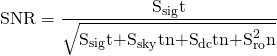
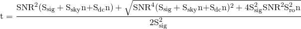
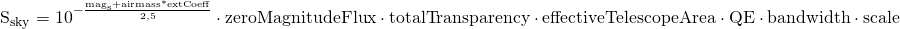
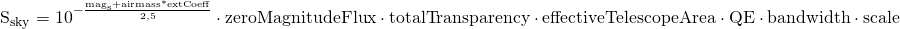
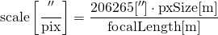

About the calculator
This calculator is made primarily for planning observations at the Astronomical Station Vidojevica (Astronomical Observatory of Belgrade). By filling up the form and clicking on the 'Calculate' button, exposure time needed in order to achive wanted signal-to-noise ratio (S/N) is calculated. If, for the given parameters, exposure time is calculated to be less than 0.01s, calculator will not show any result and the graph will not be drawn.
How to use
In the form, instruments currently available at the AS Vidojevica can be chosen. Total throughput over all reflective and refractive optical surfaces in the telescope along with the transmission of the chosen filter should be calculated separately and entered in the 'Total transparency' field. The atmosphere transmission coefficient should also be calculated independently of the calculator and entered in the 'Sky transparency' field.
Calculator can also be used with some custom instruments and options, and not only those listed in the dropdown menus. In order to do that, choose 'Custom' option from the dropdown menu. Pop-up window will appear asking for custom instrument parameters.
When using custom telescope, telescope effective area can be omitted, in which case a default value of 100% will be used.
When using custom CCD, to get the best results enter quantum efficiency of the CCD at the wavelength that corresponds to the mean wavelength of a filter that is going to be used.
Calculations
Calculator uses the following equation to calculate signal-to-noise ratio (SNR):
From this equation we get an expression for exposure time:
where Sdc and Sro are camera dark current and read out noise values, respectively.
Counts from the object, counts from the sky and number of pixels in the aperture are calculated as:
 

where
is camera resolution.